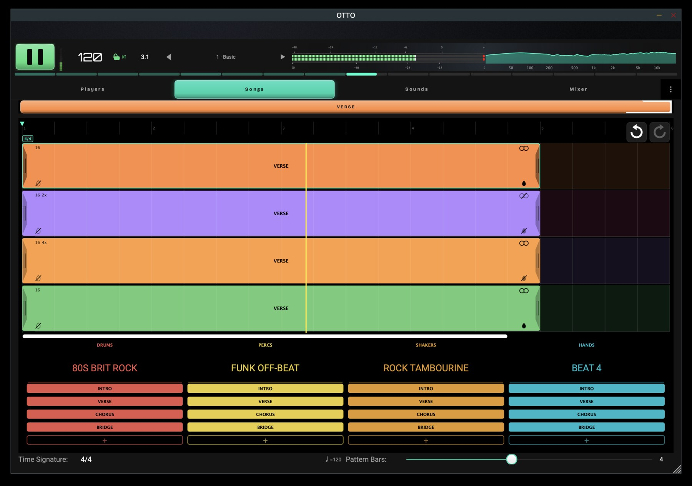
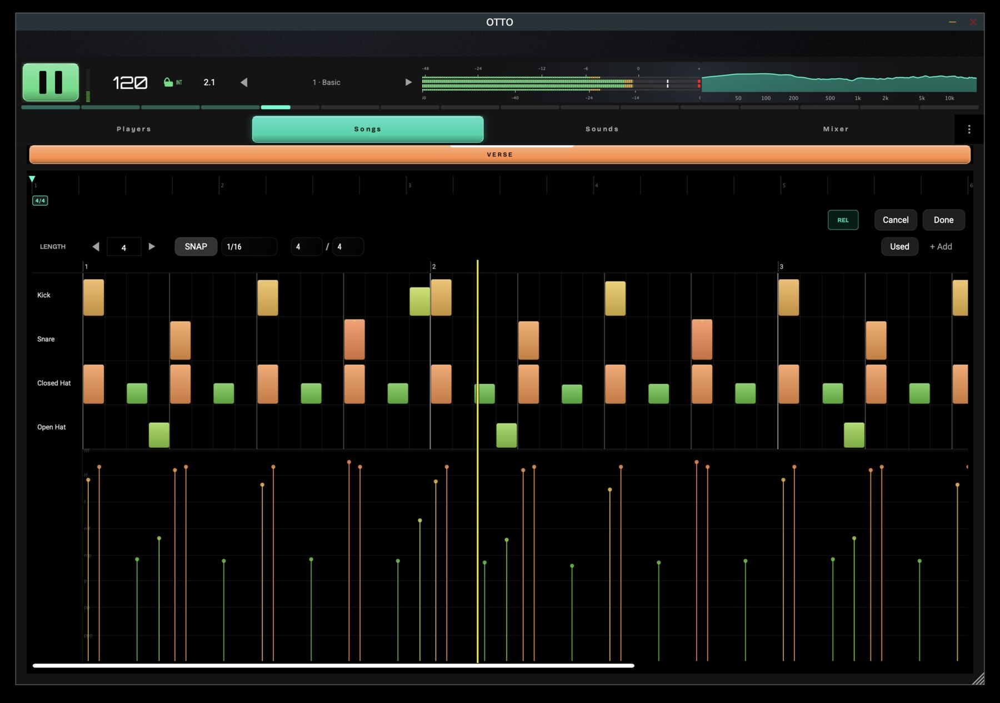
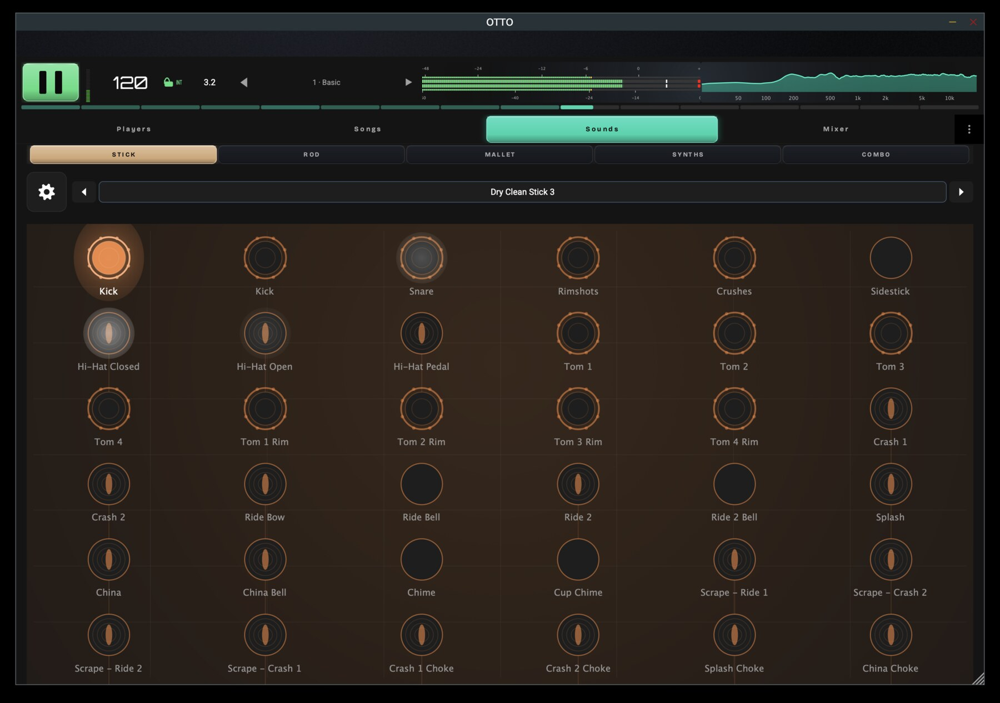
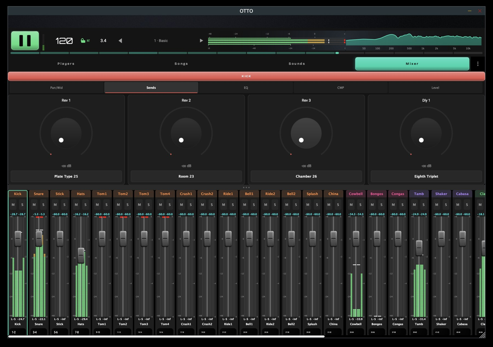
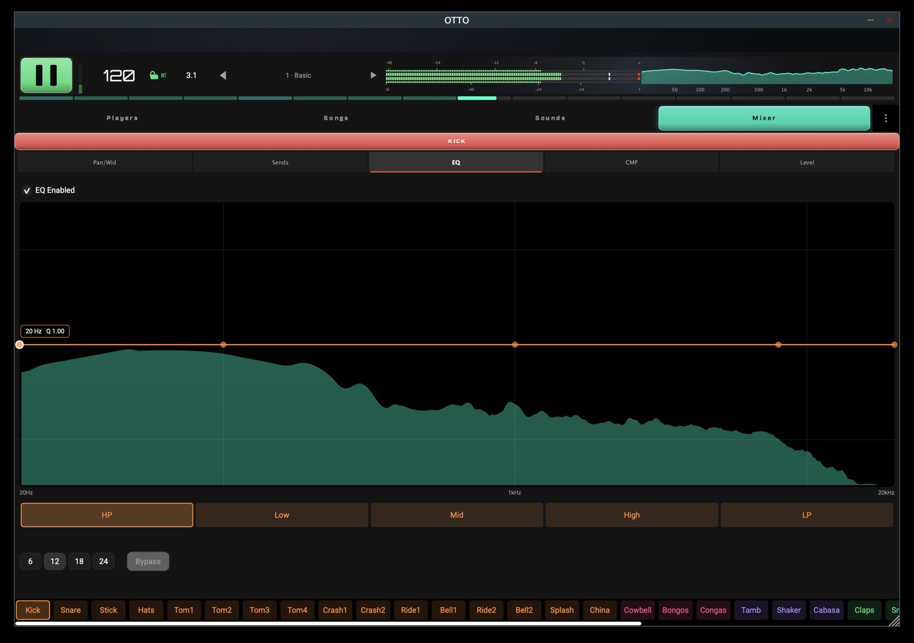
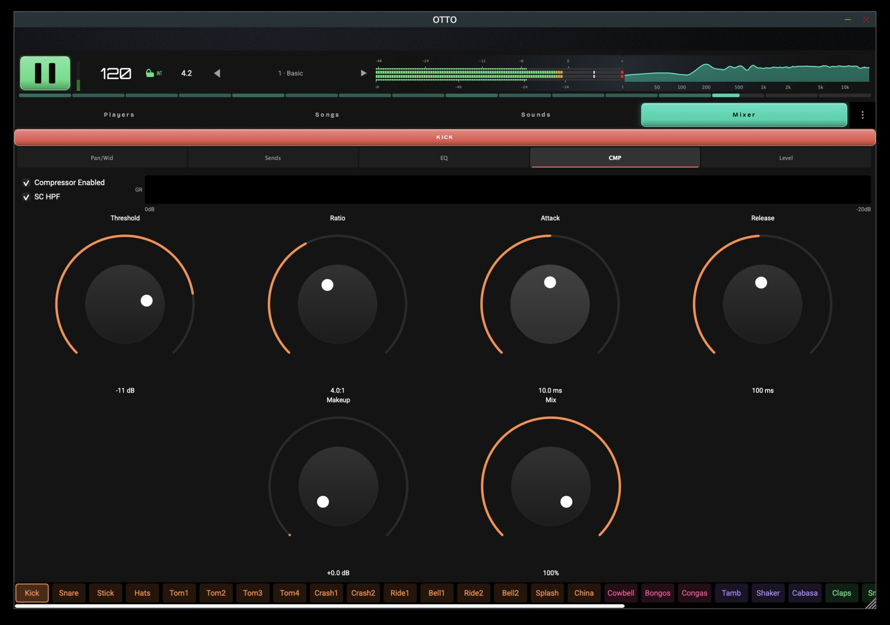
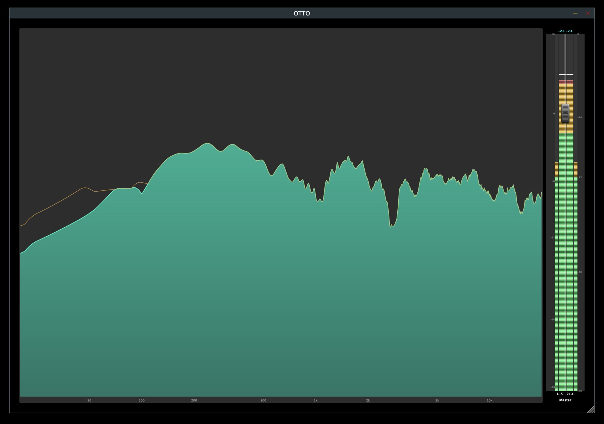

Larry Seyer Drums
The Drum DAW
A complete DAW built around drums — four players that breathe like real drummers, with everything you need to write, arrange and shape the groove in one place.
One app, two modes · Free Quick Pick forever · 14-day Full App trial · $179 Full Unlock · launching December 2026.
Larry Seyer Drums is one application with two modes: Quick Pick and Full App. Quick Pick is free forever — 10 beats, 10 player presets, 100 combinations, no time limit. Full App is a 14-day trial of the complete Larry Seyer Drums workflow; unlock it permanently for $179. Your trial begins when you first press Full App, not when you install the app. Quick Pick uses fixed factory slots until you purchase Full Unlock; after that, you can save your own beats and player presets into those slots.
Version 1.0 ships with four independent drum players — up to four drummers at once, each with its own kit and part — and all of the Larry Seyer Acoustic Drum Library drums. Optional Future Instrument Expansions and DrumKit Packs are sold separately when available.
Mac · Windows · Linux · iOS | Standalone, VST3, CLAP & AUv3
Quick Pick free at launch, December 2026. One email when it’s ready — no spam, no list-selling.
What’s New in Larry Seyer Drums
- Nov 4, 2026 — Added version 0.75 for testing on desktop and mobile ahead of the December 2026 launch.
- Nov 4, 2026 — Added struck-zone playback: snare and tom hits play the zone of the drum they strike, blending naturally toward the next.
- Nov 4, 2026 — Added per-energy-level kick beater choices, alternating between two recordings on every hit.
- Nov 3, 2026 — Added drag-and-drop MIDI import: drop a MIDI file from your DAW or desktop onto a Songs lane to import it at that bar.
Hear It
Screenshots cannot show you the part that actually matters, which is how it feels to play. New walkthroughs of the sound and the playing are on the way.
What Makes Larry Seyer Drums Different
Drum machines sound robotic because every hit lands on a perfect grid at one fixed intensity. Real rhythm sections breathe — they shift energy, push and pull feel, and arrange parts that answer one another. Larry Seyer Drums brings that to electronic drums: four independent players, each with its own kit and part, performed through an energy system that changes how a pattern feels without changing the notes.
Key Features
- Four independent playersEach with its own kit, part, level and pan, sharing a single transport. All four play drums in Version 1.0 — up to four drummers at once, each with its own kit and part — with all of the LSAD drums included
- Energy-driven feelSeven energy levels, from Asleep to Energetic, reshape velocity, timing, and articulation in real time without altering the underlying pattern
- Role-based arrangementBuild songs by placing patterns on each player's timeline. Each pattern gets its own musical role and energy level, so the arrangement changes and develops section by section
- Play it directly from MIDIStandalone or as a plugin, send MIDI notes from a keyboard, pads, an e-kit, or your DAW and it plays its drum sounds directly — no patterns or timeline required
- SeyerMorphFills in the missing samples left by traditional sampling techniques, so every kit responds continuously instead of in stepped layers
- Built for the stageReliable, uninterrupted performance whether Larry Seyer Drums is played live, driven from a DAW, or programmed — the audio engine never allocates, locks, or touches files while sound is playing
- One engine, two livesThe same code runs as a standalone instrument or an embeddable engine
- Flexible output routingA stereo sum, a per-player split, or a per-element split, all from one shared mixer
Platforms & Formats
One instrument, everywhere you work — on the desktop, on stage, and inside your DAW.
- Operating systemsmacOS, Windows, Linux, and iOS — the same app on every device
- StandaloneRun the Larry Seyer Drum app on its own, no host required — built for the stage, and playable straight from any MIDI controller
- Plugin formatsLoad it in your DAW as VST3, CLAP, or AUv3
Screenshots
Captured from a development build with a demo song playing. Version 1.0 is a complete four-player drum instrument with all of the LSAD drums.








White Paper
Larry Seyer Drums is documented in depth — its first principles, the four independent players, role-bearing pattern playback, energy-driven feel, and the real-time discipline that holds the timing together on stage.
Read the Larry Seyer Drums White PaperFX Modules
Larry Seyer Drums' signal path is shaped by a family of in-house effects modules, shared with IDA. The compressor and the reverb among them work differently from the usual approach:
Pricing
Larry Seyer Drums is one application with two modes: Quick Pick and Full App. Quick Pick is free forever. Full App is a 14-day trial; Full Unlock is $179. Launching December 2026.
Your 14-day trial begins when you first press Full App, not when you install the app. The Full App button shows how much trial time remains. After the trial, Quick Pick is still yours to play. Factory beats and player presets stay fixed during free use and the trial; Full Unlock unlocks continued full-app access and the ability to save your own beats and player presets into those slots.
Full Unlock is a one-time $179 purchase of the complete drum instrument: all 113 Larry Seyer Acoustic Drum Library kits, the drum synthesis engine, every included drum pattern, all Seyer FX, and the full Larry Seyer Drums workflow. Version 1.0 ships with four independent drum players — up to four drummers at once. Optional DrumKit Packs and Future Instrument Expansions are sold separately when available.
Quick Pick
$0 forever
- Quick Pick on Mac, Windows, Linux, and iOS
- 10 fixed factory beats and 10 fixed factory player presets
- Each beat is one section pattern from a pattern type, such as Basic Beat Verse
- Any beat plays with any player preset — 100 combinations
- Player presets include the drum kit, mixer, reverb, compressor, and EQ settings
- Remembers your last selected beat and player preset
- Factory slot contents stay fixed until you purchase the full version
- Portrait: beats on the left, player presets on the right. Landscape: beats above player presets
- Transport controls stay visible at the top
- Free to use without a time limit, including after the full-app trial ends
Full App Trial
$0 / 14 days
- Try the full Larry Seyer Drums workflow
- Four players as drummers, energy feel, arrangement, sound editing, mixer, and Seyer FX
- The Full App button shows the remaining trial time
- Quick Pick slots keep their fixed factory contents during the trial
- Quick Pick remains free when the trial ends
Full Unlock
$179 drums
- Continued access to the full Larry Seyer Drums workflow after the trial
- All four players, each able to play drums — up to four drummers at once
- Save your own beats and player presets into the Quick Pick slots
- All 113 kits in the Larry Seyer Acoustic Drum Library — the library I have been recording and programming since the Gigasampler days
- The full synth drum system
- Every drum pattern
- All Seyer FX modules
One-time purchase for the complete drum instrument. DrumKit Packs and Future Instrument Expansions are optional and sold separately when available.
DrumKit Packs
$14.95 / 10 kits
- Available only after you purchase the full version of Larry Seyer Drums
- 10 additional drum kits in each pack for $14.95
- An ever-expanding drum library, with new DrumKit Packs released over time
- Every kit plays with every pattern
- DrumKit Packs add more drum kits to the players you already own — they are not instrument expansions
Future Instrument Expansions
Recording now
projected Summer 2027
- Optional expansions that add new instrument types: Percussion, Shakers, and Hands
- Sold separately when available — not included in the $179 Full Unlock
- Different from DrumKit Packs, which add more drum kits to the existing drum players
- Being recorded now; projected availability currently Summer 2027 (planned, not a hard date)
- Pricing not decided — will be posted when an expansion is ready
- Recording progress & availability
Quick Pick, the trial, Full Unlock, and DrumKit Packs pricing goes live when Larry Seyer Drums launches in December 2026 — get notified at the top of the page. Future Instrument Expansions are optional; projected availability is currently Summer 2027 (planned, not a hard ship date), with pricing announced on the expansions page when ready.
Licensing
Larry Seyer Drums is one application: Quick Pick is free to play without a time limit, and Full App is available in a 14-day trial that starts when you first press Full App. Quick Pick slots have fixed factory contents until you purchase Full Unlock. The app itself is commercial, proprietary software — licensed, not sold. Music you make with Larry Seyer Drums is yours, and no royalty is owed on it.
The Larry Seyer Acoustic Drum Library is proprietary content. You may use it freely in your music productions, including commercial releases, but the sample files themselves may not be extracted or redistributed.